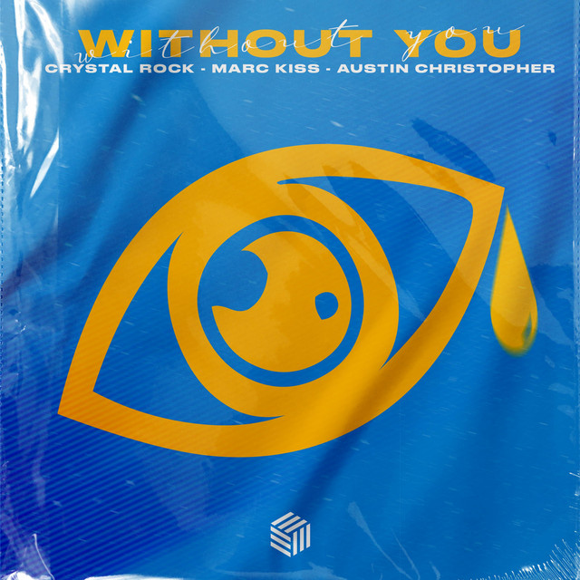

B.R.O - Jeszcze Będzie Pięknie
B.R.O - Tylko z Tobą

Crystal Rock - WITHOUT YOU
George Ezra - Anyone For You

Glass Animals - Heat Waves
Mata - Kiss cam
Lady Gaga, Bradley Cooper - Shallow
Mata - Szafir
Kwiat Jabłoni - Nic więcej

OneRepublic - Let's Hurt Tonight

ROY KNOX - I Wish
sanah - 2:00

sanah – ten Stan
Ed Sheeran - Shivers
Tom Grennan - Don't Break the Heart
White 2115 - California
sanah i Kwiat Jabłoni „Szary świat”

Tom Grennan - All These Nights

OneRepublic - Someday
WKRÓTCE